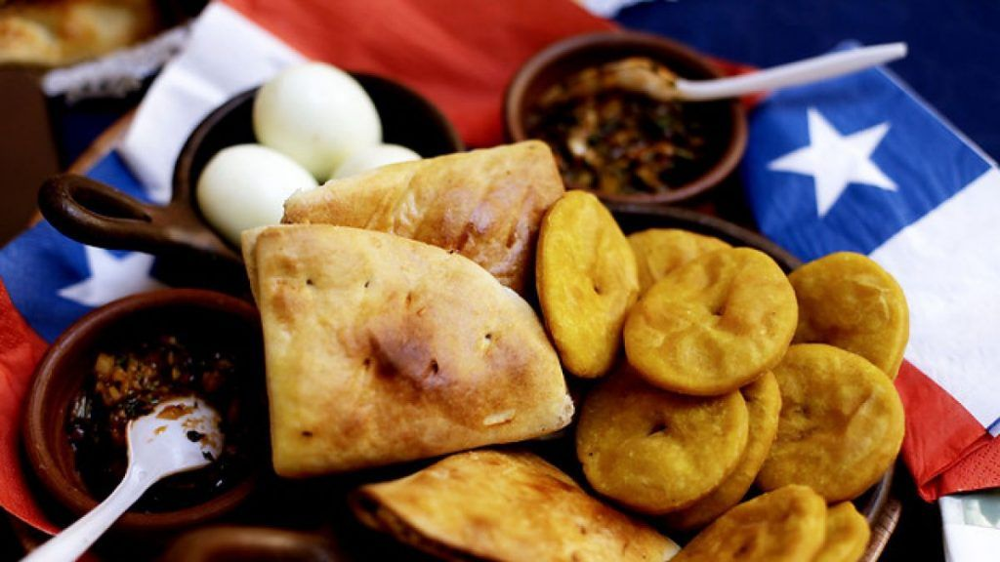

Data
- Area: 221.6 km²
- Population: 239,776
- Capital: Concepción
- Languages: Spanish
- Currency: Chilean Peso (CLP)
- Time Zone: UTC-3
Weather

- Temperature: -- °C
- Conditions: --
- Wind: -- km/h
- Wind Chill: Loading... °C
